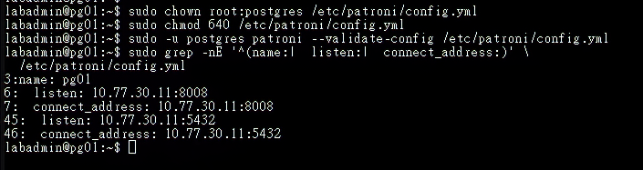
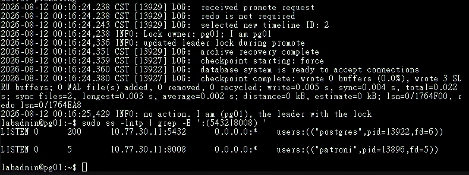
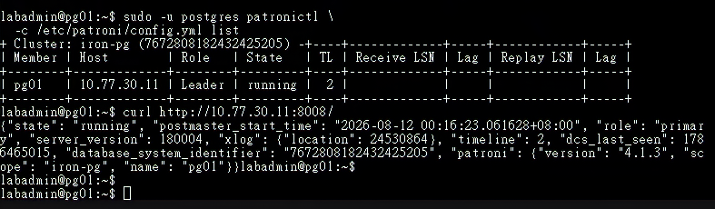
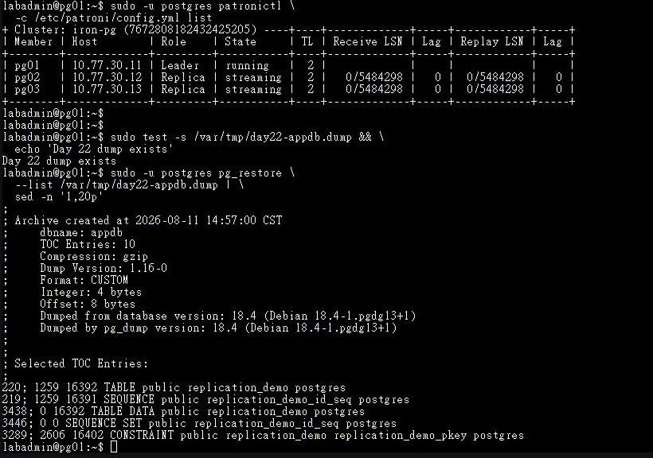
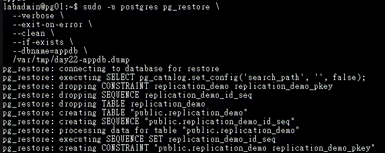
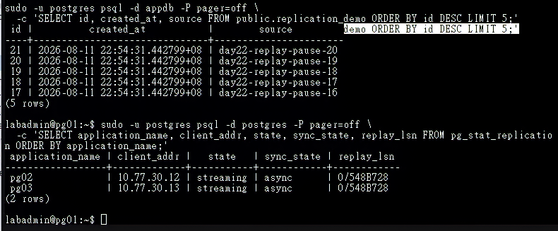
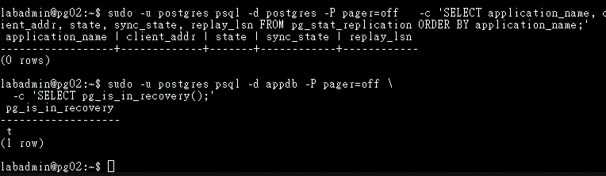
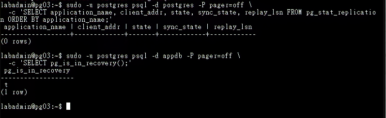

Day 23｜PostgreSQL HA 叢集實作（上）：使用 Patroni 完成自動選主與狀態管理
對應文章：Day 23｜PostgreSQL HA 叢集實作（上）：使用 Patroni 完成自動選主與狀態管理
既有的手動串流複寫已完成教學目的。本日先保存邏輯備份與舊資料目錄，再建立新的 Patroni 資料目錄；後續由 Patroni 統一管理資料庫角色與生命週期。
本日操作順序
- 先在 pg01 確認既有邏輯備份可讀，再逐台停止原本由
postgresql.service管理的服務。 - 逐台安裝 Patroni 並準備讀取 etcd 的 TLS 憑證。
- 逐台建立
/etc/patroni/config.yml。scope相同，name、listen與connect_address各自不同。 - 逐台建立 systemd 服務單元（Unit），並在下一節依序啟動。
- 先啟動 pg01 並確認成為 Leader，再啟動 pg02，最後啟動 pg03。
- 建立 PostgreSQL 與 Patroni 的主機防火牆規則，完成允許與阻擋測試。
- 只在目前 Leader 還原既有測試資料，最後從三台確認角色。
1. 安裝 Patroni
操作順序：先在 pg01 確認邏輯備份，再到 pg01、pg02、pg03 逐台安裝並保存舊資料目錄。
先在 pg01 確認邏輯備份存在，而且 pg_restore 能讀取內容：
sudo test -s /var/tmp/day22-appdb.dump && \
echo 'existing dump is readable'
sudo -u postgres pg_restore \
--list /var/tmp/day22-appdb.dump | \
sed -n '1,20p'
第一條必須顯示 existing dump is readable，第二條必須列出備份標頭與物件清單。兩項都成功後，再依序到 pg01、pg02、pg03 執行：
sudo apt update
sudo apt install -y patroni python3-psycopg2 python3-etcd
patroni --version
patronictl version
python3 -c 'import etcd; print(etcd.__file__)'
sudo systemctl disable --now postgresql
sudo pg_lsclusters
Patroni 的 etcd3 DCS 實作需要 python-etcd 模組，在 Debian 13 的套件名稱是 python3-etcd。名稱相近的 python3-etcd3gw 是另一套 etcd 用戶端，無法讓 Patroni 載入 patroni.dcs.etcd3。最後一條匯入指令必須輸出 etcd 模組路徑；出現 ModuleNotFoundError 時先修正套件相依性。
pg_lsclusters 必須顯示 18 main 的狀態為 down。確認套件管理的 PostgreSQL 已停止後，再在三台節點各自保存原資料目錄並建立 Patroni 資料目錄：
sudo test ! -e /var/lib/postgresql/18/main.day22 && \
sudo test -d /var/lib/postgresql/18/main && \
sudo mv /var/lib/postgresql/18/main /var/lib/postgresql/18/main.day22 && \
sudo install -d -m 700 -o postgres -g postgres \
/var/lib/postgresql/18/patroni
這組指令只在原資料目錄存在且 main.day22 尚未建立時執行移動；若命令鏈中止，先檢查兩個路徑，確認內容後再繼續。原本的手動叢集會保存在 main.day22，可供後續復原使用。
2. 準備 Patroni 讀取 etcd 的 TLS 憑證
操作節點：pg01、pg02、pg03。每台安裝自己的用戶端憑證與私鑰。
etcd 的私鑰只授權 etcd 讀取。每台另外建立一份由 Patroni 使用的受限副本：
sudo install -d -m 750 -o root -g postgres /etc/patroni/etcd-tls
sudo install -m 644 -o root -g postgres /etc/etcd/tls/ca.crt /etc/patroni/etcd-tls/ca.crt
sudo install -m 640 -o root -g postgres /etc/etcd/tls/node.crt /etc/patroni/etcd-tls/node.crt
sudo install -m 640 -o root -g postgres /etc/etcd/tls/node.key /etc/patroni/etcd-tls/node.key
sudo -u postgres test -r /etc/patroni/etcd-tls/node.key
3. 建立 Patroni 設定
操作節點：pg01、pg02、pg03。三台各自建立完整設定檔，不把 pg01 的檔案直接複製到另外兩台。
三份設定的 scope、namespace、etcd 端點、首次建立設定與驗證資訊必須一致；name、REST API 位址與 PostgreSQL 位址則必須使用目前節點自己的值。為避免複製後漏改 IP，以下分別提供三台的完整內容。
3.1 建立 pg01 設定
操作位置：pg01 Console。
sudo install -d -m 750 -o root -g postgres /etc/patroni
sudo nano /etc/patroni/config.yml
scope: iron-pg
namespace: /service/
name: pg01
restapi:
listen: 10.77.30.11:8008
connect_address: 10.77.30.11:8008
allowlist:
- 10.77.30.11
- 10.77.30.12
- 10.77.30.13
etcd3:
hosts: 10.77.30.11:2379,10.77.30.12:2379,10.77.30.13:2379
protocol: https
cacert: /etc/patroni/etcd-tls/ca.crt
cert: /etc/patroni/etcd-tls/node.crt
key: /etc/patroni/etcd-tls/node.key
bootstrap:
dcs:
ttl: 30
loop_wait: 10
retry_timeout: 10
maximum_lag_on_failover: 1048576
postgresql:
use_pg_rewind: true
use_slots: true
parameters:
wal_level: replica
hot_standby: "on"
wal_log_hints: "on"
max_wal_senders: 10
max_replication_slots: 10
password_encryption: scram-sha-256
ssl: "on"
ssl_cert_file: /etc/postgresql/tls/server.crt
ssl_key_file: /etc/postgresql/tls/server.key
ssl_ca_file: /etc/postgresql/tls/ca.crt
initdb:
- encoding: UTF8
- data-checksums
pg_hba:
- local all all peer
- hostssl replication replication_user 10.77.30.0/24 scram-sha-256
- hostssl postgres rewind_user 10.77.30.0/24 scram-sha-256
- host all all 0.0.0.0/0 reject
postgresql:
use_unix_socket: true
listen: 10.77.30.11:5432
connect_address: 10.77.30.11:5432
data_dir: /var/lib/postgresql/18/patroni
bin_dir: /usr/lib/postgresql/18/bin
pgpass: /var/lib/postgresql/.pgpass-patroni
authentication:
replication:
username: replication_user
password: 實際複寫密碼
superuser:
username: postgres
password: 實際管理密碼
rewind:
username: rewind_user
password: 實際Rewind密碼
parameters:
unix_socket_directories: /var/run/postgresql
tags:
nofailover: false
noloadbalance: false
clonefrom: false
nosync: false
將三個 password 值換成本次 Lab 實際使用的複寫、postgres 與 Rewind 密碼。密碼不得寫入文件或提交至 Git；正式環境應由設定管理系統（Configuration Management）或祕密儲存服務（Secret Store）產生設定檔。
儲存後先設定權限並驗證 pg01：
sudo chown root:postgres /etc/patroni/config.yml
sudo chmod 640 /etc/patroni/config.yml
sudo -u postgres patroni --validate-config /etc/patroni/config.yml

圖（一）pg01 的 Patroni 設定通過語法驗證，節點名稱、REST API 與 PostgreSQL 位址均使用 10.77.30.11。
驗證成功後才繼續 pg02。
3.2 建立 pg02 設定
操作位置：pg02 Console。
sudo install -d -m 750 -o root -g postgres /etc/patroni
sudo nano /etc/patroni/config.yml
scope: iron-pg
namespace: /service/
name: pg02
restapi:
listen: 10.77.30.12:8008
connect_address: 10.77.30.12:8008
allowlist:
- 10.77.30.11
- 10.77.30.12
- 10.77.30.13
etcd3:
hosts: 10.77.30.11:2379,10.77.30.12:2379,10.77.30.13:2379
protocol: https
cacert: /etc/patroni/etcd-tls/ca.crt
cert: /etc/patroni/etcd-tls/node.crt
key: /etc/patroni/etcd-tls/node.key
bootstrap:
dcs:
ttl: 30
loop_wait: 10
retry_timeout: 10
maximum_lag_on_failover: 1048576
postgresql:
use_pg_rewind: true
use_slots: true
parameters:
wal_level: replica
hot_standby: "on"
wal_log_hints: "on"
max_wal_senders: 10
max_replication_slots: 10
password_encryption: scram-sha-256
ssl: "on"
ssl_cert_file: /etc/postgresql/tls/server.crt
ssl_key_file: /etc/postgresql/tls/server.key
ssl_ca_file: /etc/postgresql/tls/ca.crt
initdb:
- encoding: UTF8
- data-checksums
pg_hba:
- local all all peer
- hostssl replication replication_user 10.77.30.0/24 scram-sha-256
- hostssl postgres rewind_user 10.77.30.0/24 scram-sha-256
- host all all 0.0.0.0/0 reject
postgresql:
use_unix_socket: true
listen: 10.77.30.12:5432
connect_address: 10.77.30.12:5432
data_dir: /var/lib/postgresql/18/patroni
bin_dir: /usr/lib/postgresql/18/bin
pgpass: /var/lib/postgresql/.pgpass-patroni
authentication:
replication:
username: replication_user
password: 實際複寫密碼
superuser:
username: postgres
password: 實際管理密碼
rewind:
username: rewind_user
password: 實際Rewind密碼
parameters:
unix_socket_directories: /var/run/postgresql
tags:
nofailover: false
noloadbalance: false
clonefrom: false
nosync: false
儲存後設定權限並驗證 pg02：
sudo chown root:postgres /etc/patroni/config.yml
sudo chmod 640 /etc/patroni/config.yml
sudo -u postgres patroni --validate-config /etc/patroni/config.yml
確認沒有顯示設定驗證錯誤後才繼續 pg03。
3.3 建立 pg03 設定
操作位置：pg03 Console。
sudo install -d -m 750 -o root -g postgres /etc/patroni
sudo nano /etc/patroni/config.yml
scope: iron-pg
namespace: /service/
name: pg03
restapi:
listen: 10.77.30.13:8008
connect_address: 10.77.30.13:8008
allowlist:
- 10.77.30.11
- 10.77.30.12
- 10.77.30.13
etcd3:
hosts: 10.77.30.11:2379,10.77.30.12:2379,10.77.30.13:2379
protocol: https
cacert: /etc/patroni/etcd-tls/ca.crt
cert: /etc/patroni/etcd-tls/node.crt
key: /etc/patroni/etcd-tls/node.key
bootstrap:
dcs:
ttl: 30
loop_wait: 10
retry_timeout: 10
maximum_lag_on_failover: 1048576
postgresql:
use_pg_rewind: true
use_slots: true
parameters:
wal_level: replica
hot_standby: "on"
wal_log_hints: "on"
max_wal_senders: 10
max_replication_slots: 10
password_encryption: scram-sha-256
ssl: "on"
ssl_cert_file: /etc/postgresql/tls/server.crt
ssl_key_file: /etc/postgresql/tls/server.key
ssl_ca_file: /etc/postgresql/tls/ca.crt
initdb:
- encoding: UTF8
- data-checksums
pg_hba:
- local all all peer
- hostssl replication replication_user 10.77.30.0/24 scram-sha-256
- hostssl postgres rewind_user 10.77.30.0/24 scram-sha-256
- host all all 0.0.0.0/0 reject
postgresql:
use_unix_socket: true
listen: 10.77.30.13:5432
connect_address: 10.77.30.13:5432
data_dir: /var/lib/postgresql/18/patroni
bin_dir: /usr/lib/postgresql/18/bin
pgpass: /var/lib/postgresql/.pgpass-patroni
authentication:
replication:
username: replication_user
password: 實際複寫密碼
superuser:
username: postgres
password: 實際管理密碼
rewind:
username: rewind_user
password: 實際Rewind密碼
parameters:
unix_socket_directories: /var/run/postgresql
tags:
nofailover: false
noloadbalance: false
clonefrom: false
nosync: false
儲存後設定權限並驗證 pg03：
sudo chown root:postgres /etc/patroni/config.yml
sudo chmod 640 /etc/patroni/config.yml
sudo -u postgres patroni --validate-config /etc/patroni/config.yml
三台都通過驗證後，分別執行下列指令核對最容易複製錯誤的欄位：
sudo grep -nE '^(name:| listen:| connect_address:)' \
/etc/patroni/config.yml
- pg01 只能出現
name: pg01與10.77.30.11。 - pg02 只能出現
name: pg02與10.77.30.12。 - pg03 只能出現
name: pg03與10.77.30.13。
三份設定都必須保留 postgresql.use_unix_socket: true。Patroni 會把 connect_address 公告為節點的 TCP 5432，供 Replica 與後續 HAProxy 使用；管理本機 PostgreSQL 時則優先使用 /var/run/postgresql Unix Socket，讓系統帳號 postgres 通過 local all all peer 完成首次建立後的操作。省略這項設定時，Patroni 會從本機 IP 回連 5432，並被最後一條 host all all 0.0.0.0/0 reject 擋下。
啟動前還要特別核對 Rewind 的三個部分，三者缺一不可：
bootstrap.dcs.postgresql.use_pg_rewind: true：允許 Patroni 在 Timeline 分歧後使用pg_rewind。bootstrap.pg_hba內有hostssl postgres rewind_user 10.77.30.0/24 scram-sha-256：允許舊 Primary 連到新 Leader 的postgres資料庫。postgresql.authentication.rewind內有rewind_user與對應密碼：提供 Patroni 實際連線憑證。
本機初始 YAML 的正確層級是 bootstrap.dcs.postgresql.use_pg_rewind 與 bootstrap.pg_hba。第一次 Bootstrap 完成並寫入 DCS 後，patronictl show-config 會將動態設定顯示成 postgresql.use_pg_rewind 與 postgresql.pg_hba；請依這個層級讓 pg_hba 與 parameters 保持同層。
4. 建立 systemd 服務單元
操作節點：pg01、pg02、pg03。此節只建立並啟用服務單元，先不啟動 Patroni。
若套件沒有提供符合路徑的服務單元，建立 /etc/systemd/system/patroni.service：
sudo nano /etc/systemd/system/patroni.service
[Unit]
Description=Patroni PostgreSQL HA
After=network-online.target etcd.service
Wants=network-online.target
[Service]
Type=simple
User=postgres
Group=postgres
ExecStart=/usr/bin/patroni /etc/patroni/config.yml
ExecReload=/bin/kill -HUP $MAINPID
KillMode=process
TimeoutStopSec=30
Restart=on-failure
RestartSec=5
[Install]
WantedBy=multi-user.target
sudo systemctl daemon-reload
sudo systemctl enable patroni
systemctl is-enabled patroni
systemctl daemon-reload 讓 systemd 重新讀取剛建立的服務單元，systemctl enable patroni 則建立開機自動啟動關聯；此時服務保持 inactive (dead)。下一節會依 pg01 → pg02 → pg03 的順序使用 enable --now 啟動服務。
5. 依序啟動
操作順序：pg01 → 確認 Leader → pg02 → 確認 Replica → pg03 → 確認 Replica。
- 只在 pg01 執行：
sudo -u postgres python3 -c \
'import etcd; from patroni.dcs import etcd3; print("Patroni etcd3 driver: OK")'
sudo systemctl enable --now patroni
sudo systemctl status patroni -l --no-pager
sudo journalctl -u patroni -b -n 100 -o cat --no-pager
匯入檢查必須先顯示 Patroni etcd3 driver: OK。若出現 Failed to import patroni.dcs.etcd3 或 Available implementations: consul, kubernetes，先停止 Patroni、安裝 python3-etcd 並再次確認，避免服務持續自動重啟。
若曾在缺少 use_unix_socket: true 時啟動，服務紀錄會出現 pg_hba.conf rejects connection、Failed to bootstrap cluster，Patroni 並會把失敗的資料目錄改名為 patroni.failed。先執行 sudo systemctl stop patroni，修正並驗證設定，再把這次失敗產生的 patroni 目錄另外改名保存、重建空目錄後重試；保存既有手動叢集的 main.day22 應維持原狀。
enable --now 中的 enable 設定開機自動啟動，--now 會立即啟動目前服務。單獨執行 daemon-reload 或 enable 時，Patroni 尚未開始監聽 Port。
- 確認 pg01 成為 Leader，而且 PostgreSQL 5432 與 REST 8008 已開始監聽：
sudo ss -lntp | grep -E ':(5432|8008) '
sudo -u postgres patronictl \
-c /etc/patroni/config.yml list
curl http://10.77.30.11:8008/
/etc/patroni/config.yml 權限是 0640 root:postgres，請使用 sudo -u postgres 執行 patronictl。pg01 顯示 Leader 後即可繼續。

圖（二）Patroni 已將 pg01 提升為 Leader，PostgreSQL 5432 與 Patroni REST API 8008 均開始監聽。

圖（三）patronictl list 顯示 pg01 是唯一 Leader，REST API 同時回傳 pg01 的 Primary 角色與 Patroni 版本。
- 到 pg02 啟動 Patroni：
sudo -u postgres python3 -c \
'import etcd; from patroni.dcs import etcd3; print("Patroni etcd3 driver: OK")'
sudo systemctl enable --now patroni
sudo systemctl status patroni -l --no-pager
sudo journalctl -u patroni -b -n 100 -o cat --no-pager
回到 pg01 查看叢集，等 pg02 完成基礎備份並顯示 Replica、streaming：
sudo -u postgres patronictl \
-c /etc/patroni/config.yml list
- pg02 穩定後，到 pg03 執行同一組啟動命令：
sudo -u postgres python3 -c \
'import etcd; from patroni.dcs import etcd3; print("Patroni etcd3 driver: OK")'
sudo systemctl enable --now patroni
sudo systemctl status patroni -l --no-pager
sudo journalctl -u patroni -b -n 100 -o cat --no-pager
再次回到 pg01，確認 pg02、pg03 都顯示 Replica、streaming：
sudo -u postgres patronictl \
-c /etc/patroni/config.yml list
三台都加入後，在 pg01 驗證第一次 Bootstrap 寫入 DCS 的設定，以及 Leader 實際載入的 HBA。這項檢查要在任何角色切換測試前完成：
sudo -u postgres patronictl \
-c /etc/patroni/config.yml \
show-config iron-pg
sudo -u postgres psql -d postgres -P pager=off \
-c "SELECT line_number,type,database,user_name,address,auth_method,error
FROM pg_hba_file_rules
WHERE user_name @> ARRAY['rewind_user']::name[]
ORDER BY line_number;"
show-config 中的 postgresql.use_pg_rewind 必須是 true；查詢結果必須看到 hostssl postgres rewind_user 10.77.30.0/24 scram-sha-256，且 error 為空。pg_rewind 除了帳號密碼，也需要這條 HBA 授權舊 Primary 連到新 Leader；時間軸分歧後才能執行復原。
bootstrap.dcs 與 bootstrap.pg_hba 只在第一次建立叢集時生效。若這裡檢查失敗，代表叢集已用不完整設定建立；後續修正需要直接更新 DCS 的動態設定。先在 pg01 合併以下設定：
sudo -u postgres patronictl \
-c /etc/patroni/config.yml \
edit-config iron-pg \
--apply - \
--force <<'YAML'
postgresql:
pg_hba:
- local all all peer
- hostssl replication replication_user 10.77.30.0/24 scram-sha-256
- hostssl postgres rewind_user 10.77.30.0/24 scram-sha-256
- host all all 0.0.0.0/0 reject
use_pg_rewind: true
YAML
結尾的 YAML 必須從行首開始、單獨一行且前後沒有空白；若終端機持續顯示 >，按 Ctrl+C 取消後重新輸入。接著套用並再次驗證：
sudo -u postgres patronictl \
-c /etc/patroni/config.yml \
reload iron-pg --force
sleep 12
sudo -u postgres patronictl \
-c /etc/patroni/config.yml \
show-config iron-pg
sudo -u postgres psql -d postgres -P pager=off \
-c "SELECT line_number,type,database,user_name,address,auth_method,error
FROM pg_hba_file_rules
WHERE user_name @> ARRAY['rewind_user']::name[]
ORDER BY line_number;"
確認動態設定與實際 HBA 都正確後，再進行角色切換與故障測試。
三台設定中的 restapi.allowlist 只允許 pg01～pg03 呼叫會改變叢集狀態的 REST 方法；代理服務與監控使用的 GET 健康檢查維持可讀。正式環境可依風險再配置 REST TLS 與驗證，並將管理介面限制在受控來源。
6. 限制 PostgreSQL 與 Patroni 的連線來源
操作節點：先在 pg01、pg02、pg03 建立相同規則，再從 pg01 與 ca01 分別執行允許及阻擋測試。
三台資料庫節點需要互相存取 PostgreSQL 5432 與 Patroni 8008。後續的 proxy01、proxy02 需要查詢 Patroni 角色並連線 PostgreSQL，monitor01 則需要讀取 Patroni 狀態，因此先把這些規劃來源加入主機防火牆。跨 VLAN 流量依舊受到 OPNsense 規則控制，尚未建立對應規則的來源無法只靠這份主機規則跨越 VLAN。
到 pg01、pg02、pg03 逐台備份並編輯 /etc/nftables.conf：
sudo test -e /etc/nftables.conf.before-day23 || \
sudo cp -a /etc/nftables.conf /etc/nftables.conf.before-day23
sudo nano /etc/nftables.conf
保留原本的 flush ruleset 與 Day 22 etcd 規則，在檔案末端加入以下獨立資料表：
table inet day23_postgresql {
chain input {
type filter hook input priority filter; policy accept;
iifname "lo" tcp dport { 5432, 8008 } accept
ip saddr { 10.77.30.11, 10.77.30.12, 10.77.30.13 } tcp dport { 5432, 8008 } accept
ip saddr { 10.77.20.21, 10.77.20.22 } tcp dport { 5432, 8008 } accept
ip saddr 10.77.20.51 tcp dport 8008 accept
tcp dport { 5432, 8008 } drop
}
}
先檢查完整規則檔語法，再重新載入並確認新資料表存在：
sudo nft --check --file /etc/nftables.conf
sudo systemctl reload nftables
sudo nft list table inet day23_postgresql
三台都完成後，在 pg01 確認資料庫節點之間的兩個連接埠皆可連線：
for host in 10.77.30.11 10.77.30.12 10.77.30.13; do
nc -vz -w 3 "$host" 5432
nc -vz -w 3 "$host" 8008
done
六次測試都應成功。接著開啟 ca01 Console，確認未列入允許來源的 ca01 無法直接連線 pg01 的兩個連接埠：
for port in 5432 8008; do
if timeout 3 bash -c "</dev/tcp/10.77.30.11/${port}"; then
echo "UNEXPECTED: ${port} reachable"
else
echo "BLOCKED: ${port}"
fi
done
兩次都應顯示 BLOCKED。此時 pg01 的服務已在監聽，前一項允許測試也已成功，因此這項結果用來驗證主機防火牆阻擋未授權來源。restapi.allowlist 另外限制會變更叢集狀態的 REST 方法，和連接埠層級的 nftables 規則共同形成兩層保護。
7. 還原既有測試資料
操作順序：先在 pg01 確認 Leader 與邏輯備份，再只對 Leader 還原；最後分別到 pg02、pg03 查詢 Replica。
7.1 確認 pg01 是目前 Leader
操作位置：pg01 Console。
sudo -u postgres patronictl \
-c /etc/patroni/config.yml list
本日依序從 pg01 建立叢集，因此這裡預期 pg01 顯示 Leader，pg02、pg03 顯示 Replica。既有邏輯備份只保存在 pg01；確認 pg01 維持 Leader 後，再依下一節執行還原。若角色與預期不同，先回第 5 節確認啟動順序與叢集狀態。
7.2 確認邏輯備份存在而且可讀
操作位置：pg01 Console。
sudo test -s /var/tmp/day22-appdb.dump && \
echo 'existing dump is readable'
sudo -u postgres pg_restore \
--list /var/tmp/day22-appdb.dump | \
sed -n '1,20p'
第一條必須顯示 existing dump is readable，第二條必須列出備份標頭與物件清單。若檔案不存在、大小為 0 或 pg_restore --list 報錯，先停止本節並修正備份問題，再建立 appdb。

圖（四）pg01 是 Leader、pg02 與 pg03 均為串流中的 Replica，既有邏輯備份也能列出物件清單。
7.3 在 Leader 建立 appdb
操作位置：pg01 Console。
先確認新叢集尚未存在 appdb：
sudo -u postgres psql -Atqc \
"SELECT datname FROM pg_database WHERE datname = 'appdb';"
正常的新叢集不會輸出任何內容。接著建立資料庫：
sudo -u postgres createdb appdb
如果查詢已經顯示 appdb，先確認它是否由前一次失敗的還原操作留下，再決定是否清理；已存在的資料庫不需重複執行 createdb。
7.4 還原邏輯備份
操作位置：pg01 Console。
sudo -u postgres pg_restore \
--verbose \
--exit-on-error \
--clean \
--if-exists \
--dbname=appdb \
/var/tmp/day22-appdb.dump
--clean --if-exists 會先清理邏輯備份內的同名物件，--exit-on-error 會在發生錯誤時停止。命令回到終端機提示字元且沒有顯示錯誤後即可繼續。

圖（五）畫面顯示 pg_restore 正在目前 Leader pg01 建立 replication_demo 資料表、序列與主鍵；整體是否成功以上一段的命令結束狀態為準。
7.5 在 Leader 驗證資料
操作位置：pg01 Console。
sudo -u postgres psql -d appdb -P pager=off \
-c '\dt public.*'
sudo -u postgres psql -d appdb -P pager=off \
-c 'SELECT count(*) AS rows, min(id) AS first_id, max(id) AS last_id FROM public.replication_demo;'
sudo -u postgres psql -d appdb -P pager=off \
-c 'SELECT id, created_at, source FROM public.replication_demo ORDER BY id DESC LIMIT 5;'
記錄 Leader 的資料筆數；先前實驗可能寫入不同數量，因此以三台查詢結果一致作為判讀條件。接著確認兩台 Replica 都已連線：
sudo -u postgres psql -d postgres -P pager=off \
-c 'SELECT application_name, client_addr, state, sync_state, replay_lsn FROM pg_stat_replication ORDER BY application_name;'
預期看到 pg02、pg03 兩列，state 都是 streaming。若只有一列，先處理缺少的 Replica，不要直接宣告還原完成。

圖（六）pg01 能查到還原後的資料，pg_stat_replication 顯示 pg02、pg03 均維持非同步串流複寫。
7.6 到 pg02 驗證 Replica
操作位置：pg02 Console。
sudo -u postgres psql -d appdb -P pager=off \
-c 'SELECT pg_is_in_recovery();'
sudo -u postgres psql -d appdb -P pager=off \
-c 'SELECT count(*) AS rows, min(id) AS first_id, max(id) AS last_id FROM public.replication_demo;'
sudo -u postgres psql -d appdb -P pager=off \
-c 'SELECT id, created_at, source FROM public.replication_demo ORDER BY id DESC LIMIT 5;'
pg_is_in_recovery() 必須是 t，資料筆數與最後五筆資料必須和 pg01 一致。若剛還原完暫時查不到資料表，先等待 Replica 重播 WAL 後重新查詢；資料表應由串流複寫取得。

圖（七）pg02 的 pg_is_in_recovery() 回傳 t；Replica 沒有下游節點，因此本機 pg_stat_replication 為空。
7.7 到 pg03 驗證 Replica
操作位置：pg03 Console，執行和 pg02 完全相同的三條查詢：
sudo -u postgres psql -d appdb -P pager=off \
-c 'SELECT pg_is_in_recovery();'
sudo -u postgres psql -d appdb -P pager=off \
-c 'SELECT count(*) AS rows, min(id) AS first_id, max(id) AS last_id FROM public.replication_demo;'
sudo -u postgres psql -d appdb -P pager=off \
-c 'SELECT id, created_at, source FROM public.replication_demo ORDER BY id DESC LIMIT 5;'
pg03 同樣必須是復原狀態，資料筆數與內容必須和 pg01、pg02 一致。完成本節即可確認既有測試資料已由 Patroni 叢集複寫。app_owner、app_rw、app_ro 等應用程式角色由 Web 後端部署流程建立。

圖（八）pg03 的 pg_is_in_recovery() 回傳 t；Replica 沒有下游節點，因此本機 pg_stat_replication 為空。
8. 驗證責任邊界
操作節點：從任一健康節點查詢叢集，再分別登入 pg01、pg02、pg03 驗證本機角色。
sudo -u postgres patronictl -c /etc/patroni/config.yml list
sudo -u postgres psql -c 'SELECT pg_is_in_recovery();'
curl -i http://10.77.30.11:8008/primary
curl -i http://10.77.30.12:8008/replica
後續使用 Patroni 或 patronictl 停止／啟動資料庫，讓 Patroni 持續作為本次 PostgreSQL 執行個體的唯一控制來源。套件預設的 postgresql.service 保持停用，也不要手動啟動 postgresql@18-main，以免舊叢集和 Patroni 競爭連接埠與資料目錄。